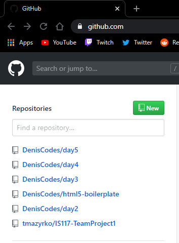
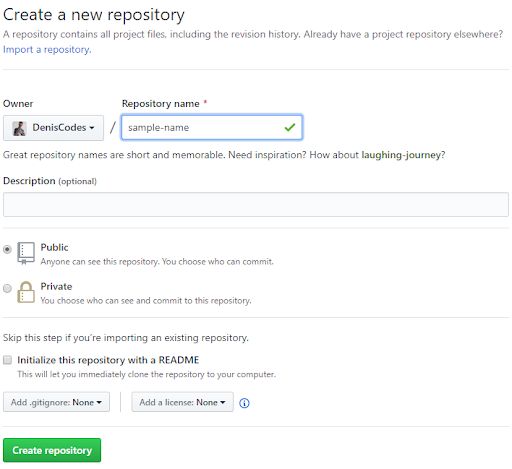
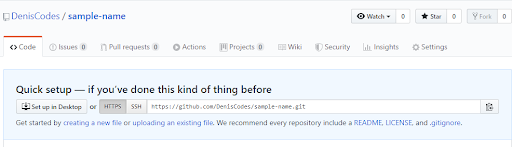
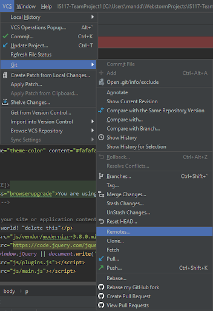
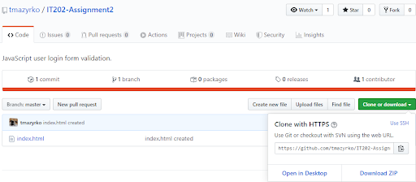
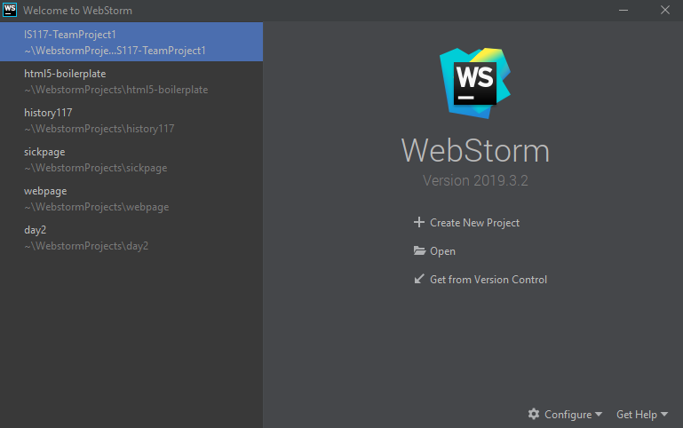

How to make a repository
A repository is something that holds your projects and files on GitHub. To make a repository, go to github.com and you will see all of your repositories on the left. Then, click the green New button. Give your new repository a name in the Repository Name text box.
 To upload your files from webstorm to github you need to copy the link of the repository by clicking the clipboard button.
In webstorm go to VCS then Git and finally click Remotes… In the pop up box click the plus sign and paste your github repository link where it says URL.
To clone someone else’s GitHub repository, go to their repository, click the Clone or download button, and copy the link.
To fork someone else's repository simply click the fork button. To exclude a file from being uploaded to github simply type the file name into your .gitignore file.
To put the cloned repository into webstorm simply when you open webstorm click on Get from Version Control and paste the link into the URL field.
